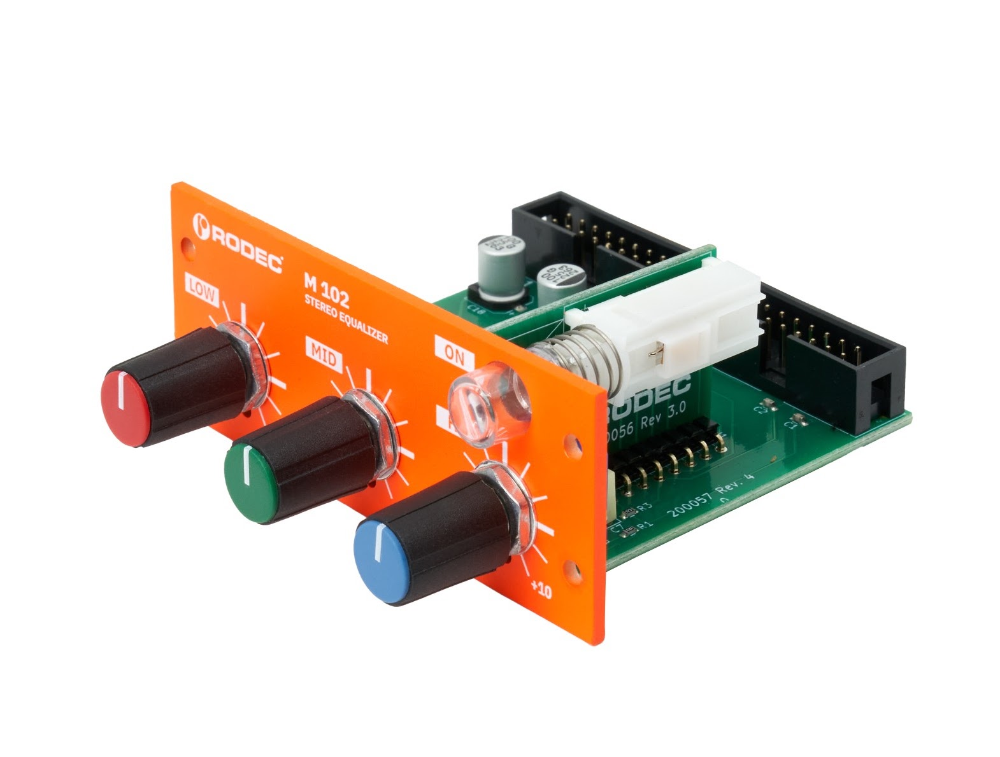

M-102 Stereo Equalizer

The M-102 Stereo Equalizer is a faithful recreation of the iconic MX-18 EQ, designed for musical tone shaping and dynamic control of your audio. Unlike the extreme kill EQs found on modern DJ mixers, the M-102 offers a more refined, usable equalizer that enhances your recordings with musicality and precision.
Key Features
- 3-Band Analog EQ:
- Low, High, and Presence (Mid) bands for flexible tone control.
- Each band operates within carefully selected frequency ranges to provide an independent and balanced tonal palette.
- Precision Control:
- Each band features a dedicated knob capable of boosting or cutting up to ±12 dB at the selected frequency range.
- Provides subtle to impactful tonal adjustments, perfect for tweaking recordings or live audio.
- Classic Design:
- Based on the original MX-18 circuitry, the M-102 EQ retains the warm analog sound and dynamic response of its predecessor.
- Offers a larger control range for independent adjustments across all three bands.
Applications
- Music Enhancements:
- Add depth and clarity to your favorite tracks by subtly shaping the low, mid, and high frequencies.
- Recording Adjustments:
- Smoothly correct tonal imbalances or enhance specific elements in your mix.
- Live Performance:
- Use the M-102 EQ to bring out the best in your sound system without overpowering or distorting the original audio.
For connectors and pin layout see Rodec K7 and Rodec 100 series
Summary
The M-102 Stereo Equalizer is not about drastic, isolating cuts; instead, it’s a musical tool for tonal enhancement. With low/high and presence (mid) sections, it offers a versatile and professional-grade EQ, ideal for fine-tuning your recordings and performances with a classic analog touch.